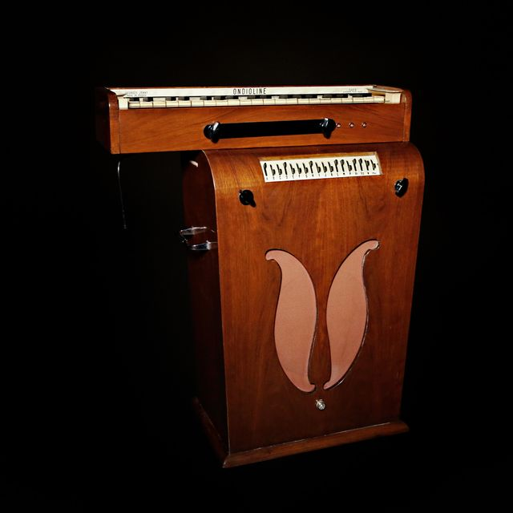

Scheda 035 · 1947 · Parigi
Ondioline
La tastiera è appoggiata su molle: si spinge di lato, come una corda di violino
L'alternativa povera alle Ondes Martenot, costruita a mano da un uomo solo per vent'anni.
- ANNO
- 1947
- ORIGINE
- Francia
- TASTIERA
- Sospesa su molle
- VOLUME
- Leva al ginocchio
La macchinaChe cos'è
Una tastiera corta montata sopra un mobile con l'altoparlante dentro. Il timbro nasce da un circuito a multivibratore e passa per un banco di cursori — da dieci a diciassette secondo il modello — che tolgono e aggiungono armoniche: da lì escono legni, ottoni, archi, e cose che non assomigliano a niente. Il volume non sta su una manopola ma su una leva che si spinge col ginocchio, così le mani restano libere.
Chi l'ha costruitaGeorges Jenny
Jenny comincia a costruirne il primo esemplare alla fine degli anni Trenta, mentre è ricoverato in un sanatorio del sud della Francia per tubercolosi. Voleva una macchina che facesse quello che facevano le Ondes Martenot ma che una famiglia potesse permettersi. Ne costruì circa milleduecento fra la metà degli anni Quaranta e la fine dei Sessanta, quasi tutti con le proprie mani.
Come funzionaCosa c'è dentro
I tasti non sono avvitati al telaio: poggiano su molle disegnate apposta. Premuto un tasto, lo si può spingere a destra e a sinistra, e l'intonazione si piega di conseguenza — lo stesso gesto che fa un violinista sulla corda, su una tastiera. Il vibrato quindi non arriva da un oscillatore che lo produce sempre uguale: lo fa la mano, nota per nota, e non ce ne sono due identici.
Chi l'ha usataNei dischi
- Jean-Jacques PerreyVent'anni a costruirci sopra una tecnica che non aveva nessun altro
- Georges JennyIl costruttore la presentava lui stesso alla radio francese
- GotyeSettant'anni dopo ne restaura gli esemplari e ci porta in tour un'orchestra
L'aneddotoUna storia
Nel 1949 uno studente di medicina sentì alla radio francese un signore che presentava una macchina sconosciuta. Si chiamava Jean-Jacques Perrey, andò a cercarlo, e Jenny gli mise in mano uno strumento e un lavoro: fu il primo venditore dell'Ondioline. Non ne vendette moltissimi, ma ci passò vent'anni sopra e ne divenne l'unico vero virtuoso: quasi tutto quello che oggi sappiamo di come suona lo si deve a lui.
Avvertenze
Il vibrato non c'è finché non lo fai tu. Se tieni il dito fermo, la nota resta dritta come un tubo.
Il carosello
Le 6 tavole
Da dove viene
Fonti
- «Ondioline» — Wikipedia (EN) verificata il 2026-09-11
- «Wally De Backer on the Lasting Influence of Jean-Jacques Perrey and the Ondioline» — Red Bull Music Academy Daily verificata il 2026-09-11
Foto: ForgottenFuturesBB · CC BY-SA 4.0 · Wikimedia Commons